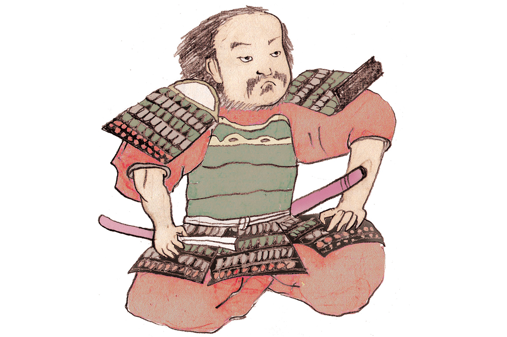
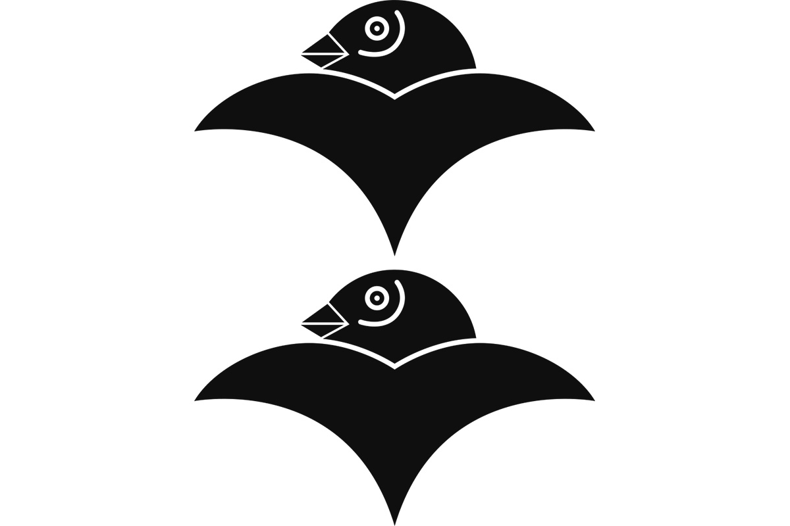

Префектура Айти · Нагоя · история
Кацуиэ Сибата: «демон Сибата», старейший вассал Нобунаги Оды родом из Овари

Кацуиэ Сибату боялись враги и любили собственные воины. Он много лет был первым среди полководцев Нобунаги Оды, а после гибели господина проиграл спор за власть Хидэёси Тоётоми и до последнего часа благодарил тех, кто ему служил.
Эпоха
Время воюющих провинций
С конца XV до конца XVI века Япония жила в состоянии почти непрерывной войны. Власть сёгунов Асикага окончательно рухнула, и на смену назначенным губернаторам провинций по всей стране пришли самостоятельные князья, которые держали землю силой оружия. Эту эпоху называют периодом Сэнгоку, временем воюющих провинций, и её полководцы до сих пор остаются героями легенд, романов и сериалов.
Одним из самых известных стал Кацуиэ Сибата (1522?–1583), старейший вассал дома Ода. Он родился, как считается, около 1522 года в уезде Айти провинции Овари, на западе нынешней префектуры Айти. В молодости его звали Гонроку, позднее он принял имя Кацуиэ, а на склоне лет буддийское имя Дзёсё. Его женой стала О-Ити (1547–1583), младшая сестра Нобунаги Оды (1534–1582), будущего объединителя Японии.

Характер
«Демон Сибата»
Португальский миссионер Луис Фройс (1532–1597) назвал Кацуиэ самым храбрым и решительным из полководцев. Кацуиэ был смел, прям и широк душой. В 1552 году в битве при Каядзу против соперничающей ветви рода Ода он, по преданию, одним натиском сразил тридцать всадников и убил старшего вассала врага. С тех пор его и прозвали «демоном Сибата», «Они-Сибата».
Начинал Кацуиэ на службе у Нобухидэ Оды (1511–1552), отца Нобунаги. В 1551 году он стал старшим вассалом его сына Нобукацу, младшего брата Нобунаги, и оказался втянут в спор братьев о наследстве. В 1556 году войско Нобукацу проиграло Нобунаге битву при Ино, и Кацуиэ сдался победителю. С этого дня он служил Нобунаге.
Служил так, что стал первым среди его полководцев. В 1568 году Кацуиэ шёл с Нобунагой в Киото, воевал против князя Ёсикагэ Асакуры (1533–1573) и сражался в битве при Нагасино в 1575 году. В том же году он получил замок Китаносё в провинции Этидзэн, на землях нынешней префектуры Фукуи. В 1580 году он подавил восстание секты Икко в провинции Кага и продвинулся дальше на север, в провинции Ното и Эттю.
1582–1583
Спор с Хидэёси
В 1582 году Нобунага погиб в храме Хонно-дзи в Киото, и судьбу дома Ода решали на совете в замке Киёсу, где Кацуиэ разошёлся с Хидэёси Тоётоми (1537–1598) в выборе наследника (подробнее в статье о замке Киёсу). После совета Кацуиэ взял в жёны овдовевшую О-Ити.
Спор закончился войной. В 1583 году Хидэёси, тогда ещё под фамилией Хасиба, разбил Кацуиэ в битве при Сидзугатакэ. Кацуиэ отступил в замок Китаносё, заперся в главной башне и сделал себе харакири. О-Ити погибла вместе с ним, а трёх её дочерей перед этим отпустили из замка. По преданию, перед смертью Кацуиэ поблагодарил не только вассалов, которые остались с ним до конца, но и тех, кто его покинул. Этот рассказ хорошо показывает, каким он был: беспощадным к врагу и мягким к своим людям.
Перед смертью Кацуиэ сложил прощальное стихотворение. Летней ночью уходить из жизни так же мимолётно, как видеть сон, говорит он, и просит горную кукушку унести его имя за облака.
«Летней ночью путь сна недолог. Имя моё, что останется после, вознеси за облака, горная кукушка»
прощальное стихотворение Кацуиэ Сибаты, 1583 год
В городе Фукуи, на месте замка Китаносё, стоит святилище Сибата, где Кацуиэ почитают как божество, а рядом установлены бронзовые статуи Кацуиэ, О-Ити и трёх её дочерей.
Где увидеть
Места Кацуиэ в Нагое
Храм Мётоку-дзи: место рождения
На востоке Нагои, в районе Мэйто, стоит храм Мётоку-дзи. По преданию, его основали в 1391 году, а главный зал построен около 1860 года. Здесь, по сведениям района, жил Кацуиэ Сибата: у ворот храма справа стоит камень с надписью о руинах замка Симоясиро, слева камень, отмечающий место рождения Кацуиэ. Где именно он родился, точно не известно, но в районе Мэйто это место считают его родиной.
В зале Дзюо-до слева от главного зала хранятся деревянные статуи десяти судей загробного мира, охраняемый городом памятник народной культуры. Через храм проходит пешеходный маршрут района Мэйто «Кацуиэ Сибата» длиной около 6 км: от станции метро Исся мимо храмов и святилищ до станции Камиясиро.
Храм Мётоку-дзи
- Адрес
- префектура Айти, Нагоя, район Мэйто, Рикудзэн-тё, 1310
- Как добраться
- от станций метро Исся или Камиясиро (линия Хигасияма) по маршруту «Кацуиэ Сибата»
- Сайт
- city.nagoya.jp
Косиндзука: поле битвы при Ино
На севере Нагои, в районе Ниси, у кварталов Надзука и Ино, в 1556 году Нобунага разбил войско своего брата, которое вели Кацуиэ Сибата и другие вассалы. Эта победа стала для Нобунаги большим шагом к власти над всей провинцией Овари. Память о битве хранит Косиндзука, небольшой холм. Говорят, здесь почтили души погибших в сражении, хотя сам холм остался от старинного народного культа Косин. Место входит в пешеходный маршрут района Ниси вокруг парка Сёнай-рёкути.
Косиндзука, поле битвы при Ино
- Адрес
- префектура Айти, Нагоя, район Ниси, Надзука-тё, 1-тёмэ
- Сайт
- city.nagoya.jp
Фото: Мария Араи (иллюстрация).